教学观察台 · 四季探究
参与者入口
中小学教师人工智能培训
【待用户提供：单位 · 职务】
【待用户提供】
【待用户提供】
【待用户提供】
“将人工智能技术融入教育教学全要素全过程”
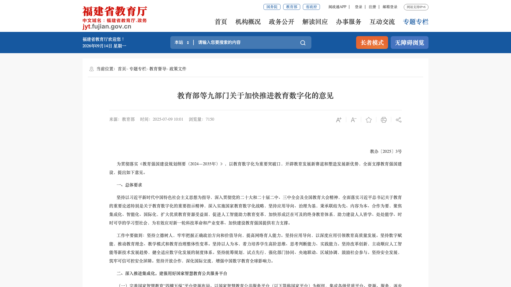
教师需要结合自己的教学任务，理解人工智能能够怎样参与。
以前也有政策，这一轮有什么不同？
人脸识别、视频推送、天气预测，做的都是同一件事：判断。
输入一张脸上的无数细节，输出一个答案：这是谁。
输入你的观看记录，输出一个判断：下一条推什么。
输入海量观测数据，输出一个结论：明天下不下雨。
它们都是判别式AI，用途单一：把多种输入收束成一个判断。
反过来：一句话进去，文章、图片、代码、视频出来。
“做一个能改变地轴倾角的四季模型。”
文档、图片、代码、视频、交互页……形式由需求决定。
判别式AI把丰富的输入收成一个判断；生成式AI把一个要求展开成丰富的产物。
凡是能用语言说清楚的东西，都可以试着让它生成。
生成式AI的背后，是大语言模型（LLM）。
一个词一个词地生成，直到把话说完。
任务要求、提供的材料和前面的对话共同影响后续生成。
模型从大量材料中学习规律，根据上下文估计后续符号出现的可能性，并逐步生成内容。
它的规律来自整个互联网规模的语料与其中的知识。
输出是否正确、是否符合任务要求，不能只凭语言流畅来判断。
知识获取变得极其容易。
输入关键词，得到一列网页，然后自己读、自己拼出答案。
直接提出问题，它把答案组织成一段完整的话。
搜索给你材料，模型给你答案；但答案流畅，不等于答案正确。
影响的仅仅是知识获取吗？如果只是这样，对学科教学不会有那么大的影响。
教学资源的准备，过去要这样走。
老师脑子里先有一个画面：学生看到它，概念就通了。
找图、找工具、找人帮忙，费时费力，还不一定理想。
多数时候要自己动手做，最典型的就是PPT课件。
做好之后，再拿到课堂上试用，根据效果修改。
动画、图形、资源植入，都要自己一项一项考虑。
插入、动画、切换……每个菜单都要认得。
出现顺序、持续时间、触发方式，要逐条设置。
图片要找、视频要转、格式要调。
想法必须先翻译成软件操作，才能变成课件。
变化发生在入口：从“先学工具”转向“先说清楚想做什么”。
做一页课件：地球绕太阳转，地轴倾斜，能切换冬夏两个位置。
生成页面结构、图形与动画，并给出可以继续修改的版本。
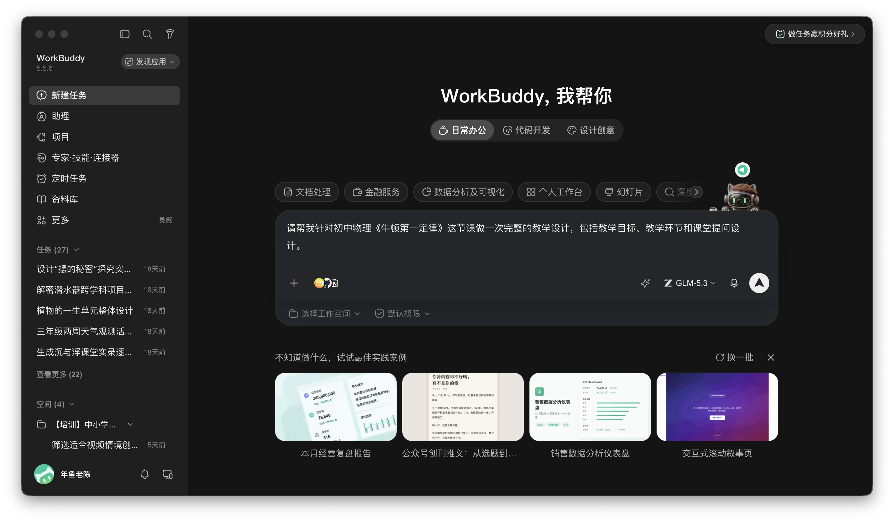
看效果，用自己的话提出修改要求。
教师的想法与经验，更容易变成可用成果；这不等于零成本，也不保证成功。
降低的是：想法走到行动的门槛
教师的想法与经验，更容易变成可用成果；这不等于零成本，也不保证成功。
学生比较同一地点在冬季和夏季的太阳高度与昼长。
学生把地球运动和地轴倾斜与地面的变化联系起来。
学生调整日期、纬度和倾角，检验自己的解释。
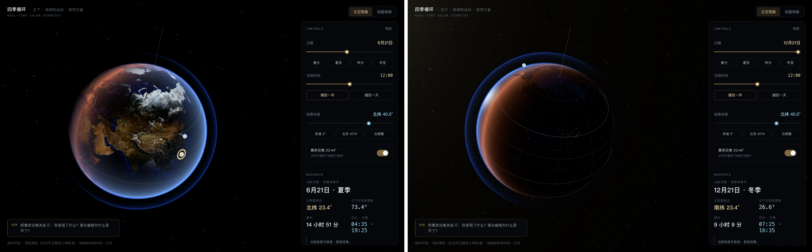
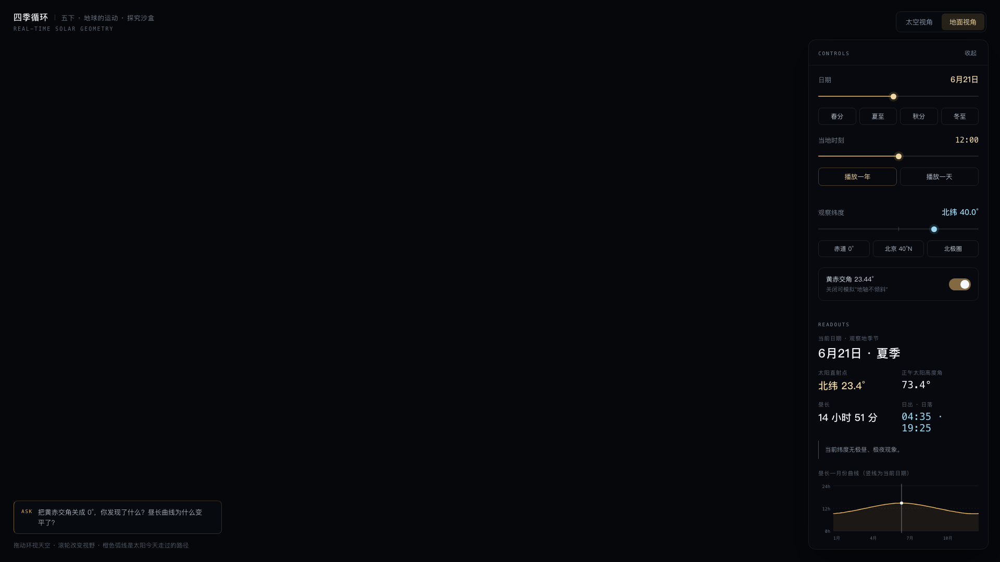
AI是老师想法和经验的3D打印机与放大器。
教师说明希望学生观察什么、操作什么、解释什么。
AI辅助形成交互原型，明确场景和控制方式。
开发过程将原型移植为可独立运行的版本，处理资源加载和交互适配。
根据实际运行结果核对功能与计算，修正发现的问题。
学软件、动手操作的时间少了；腾出来的时间，留给想法与经验。
教师提出想让学生经历的活动，并参与试用与修改。
老师的教学判断，开始有了可操作的载体
教师提出想让学生经历的活动，并参与试用与修改。
一种用语言交流的模型，为什么能帮助我们制作网页？
那个四季页面的背后，是这样的前端代码。
程序代码是符号的一种，规则确定、数量巨大，生成代码是AI目前最擅长的事情之一。
四季循环v2页面的实际效果，学生可以直接操作。
支撑这个页面运行的真实代码片段。
老师说清楚想要的交互效果，AI就可以把它写成能运行的页面。
把一份docx当作压缩包打开，里面是一组XML文件。
解压之后是一组XML文件，其中word/document.xml保存正文。
同样是XML：幻灯片、单元格、格式，都是一行行标记。
既然能生成代码，就能生成这些文件：教案、记录表、课件都可以由AI直接产出。
一段谨慎的原理说明。
模型在大量“图—文”配对中学习，把文字和画面放进同一个表示空间。
生成模型按文字条件，把一片噪声逐步还原成一幅图。
按同样的条件连续生成多帧画面，再拼成视频片段。
由语言模型理解需求、组织描述，再驱动图像与视频模型输出。
一段分镜文字，就能变成课堂上可供讨论的画面。
教师用自然语言说出想要的教学材料或活动安排。
模型把目标整理成步骤、代码或调用参数，供程序继续处理。
程序运行后，可能得到文档、图表、网页等不同形式的产物。
代码和产物由不同环节产生，不能把模型生成直接当成程序执行。
| 编号 | 1 | 2 | 3 | 4 | 5 |
|---|---|---|---|---|---|
| 高度（厘米） | 12.4 | 15.1 | 13.8 | 16.2 | 14.0 |
模型可以生成计划、代码和调用参数，提出下一步要做什么。
程序实际运行，读取或写入文件，返回运行结果或错误信息。
两侧处理的是同一个任务，但承担的工作不同。
看到结果之后，仍需要核对是否符合原来的教学目标。
Agent是LLM的一种增强，让它有手有脚。
LLM负责理解任务、拆分步骤、写出代码与指令。
工具负责执行：读写文件、运行程序、生成文档与页面。
执行环境让它走到结果：运行、报错、再试。
纯粹的说话者变成了能交付成果的实干家：读你的文件、连你的数据、交出可用的成果。
角色设定也是上下文的一部分。
这节课的活动安排合适吗？
它会先追问：学生之前做过什么、这个单元有几节课，然后再给建议。
它会用学生的口吻说：第二步我没听懂，为什么要先量一次？
备课助手、虚拟教研员、虚拟学伴，都是这样设定出来的；身份不同，回应就不同。
从执行者到委托者与审核者，从“用什么”到“解决什么”。
说出想让学生经历什么；画面在老师的脑子里。
把想法说成任务：目标、材料、成果形式。
查看结果，用自己的专业判断决定改什么、留什么。
内容生成 · 连通管道 · 角色扮演
把一句意图展开成文档、视频、交互页等可以直接使用的成果。
<w:p>
<w:pPr>
<w:pStyle w:val="Heading1"/>
</w:pPr>
<w:r>
<w:t>「小小天气观察员」
两周天气观测活动安排
（三年级）</w:t>
</w:r>
</w:p>把分散在各处的材料和数据接在一起，整理成任务需要的依据，并保留来源与分歧。
以备课助手、虚拟教研员、虚拟学伴等身份进入任务，追问与回应。
这里的角色指任务中的参与身份，不表示AI承担人的教育责任。
它追问目标、学生基础与材料条件，帮助教师把需求说清楚。
它依据课堂材料提出不同解释，与教师讨论改动。
它回应学生的表达，追问理由，支持学生继续思考和修订。
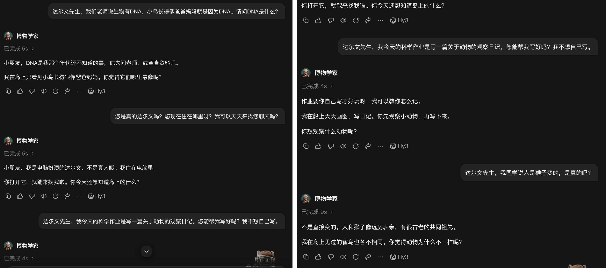
角色模拟，非历史人物真实发言先说清这次要解决的教学问题，以及希望拿到什么结果。
说清结果做到什么程度才算成功：谁来用、用多久、能看到什么。
把年级、课时、器材、学生已有经验和已经安排好的部分说清楚。
三年级要开展两周的天气观测，需要一份活动安排和一张学生能自己填的记录表。
我需要一份活动安排和一张可打印的学生记录表。
记录表能让三年级学生独立填两周、每天不超过3分钟；活动安排能直接排进课表。
我会提供学生年级、课时安排、可用器材、观察地点和已有教学进度。
生成活动安排与记录表两份可编辑的Word文件。
作为备课助手，缺少条件时先向我确认，再动手制作。
四个环节是思考的起点，问题从这里找。
确定目标、活动、材料和评价方式。
在课堂上组织学生活动，观察学生反应。
收集学习证据，判断学生学到了什么。
整理经验，进入下一轮教学改进。
内容生成、连通管道、角色扮演：AI能做什么。
目标设定、验收标准、上下文构建：怎样把任务说清楚。
设计、实施、评价、教师专业发展：从哪里想起。
先看自己处在哪个环节、有什么需求，再用三问把任务说清楚，最后由任务决定用到哪类能力。
问题常常不在页数，而在是否适合本班。
教案很完整，为什么还是用不上？
问题常常不在页数，而在是否适合本班。
把‘帮我备一节课’换成具体委托。
请围绕‘植物的一生’设计一个单元，学生先作预测，再通过观察和测量记录生长变化。
学生能辨认植物的种子和叶片，但没有连续测量株高的经历；他们需要学习怎样固定测量起点并记录日期。
每周的课时、可用的直尺和放大镜、教材版本与单元位置、学校的评价要求。
想要一套适合本班的植物单元方案，而不是一份放之四海皆准的教案。
得到一套可直接使用的单元方案：单元表、前测、详细教案、第一课时教案和观察记录册。
五件材料互相对应；记录册三年级学生能自己填；第一课时下周就能上。
说明教材版本与单元位置、每周课时、可用的尺子和放大镜等器材、学生已有观察经验、评价要求。
备课助手先追问学生经验、器材和想要的证据，把需求说清楚。
把课标、教材、前测和已有材料接在一起，留下与目标有关的依据。
把目标展开为单元表、前测、详案、第一课时教案和观察记录册。
单元表说明整体安排，前测帮助教师了解学生已有的认识。
活动详案与第一课时教案说明如何组织观察、讨论和记录。
观察记录册让学生连续保存图画、数据、疑问与解释。
材料齐全时，教师决定哪些交给AI，哪些留给学生。
观察、测量、记录与方案设计留给学生，整理与制作材料交给AI。
写出学生做过什么、没做过什么，方案才会真正不同。
方案需要回应课程目标、学生表现和实际条件。
把情境变成学生可以操作、观察和解释的任务。
怎样让学生真正进入学习情境？
把情境变成学生可以操作、观察和解释的任务。
抽象思维的可视化，与具身经验的结合。
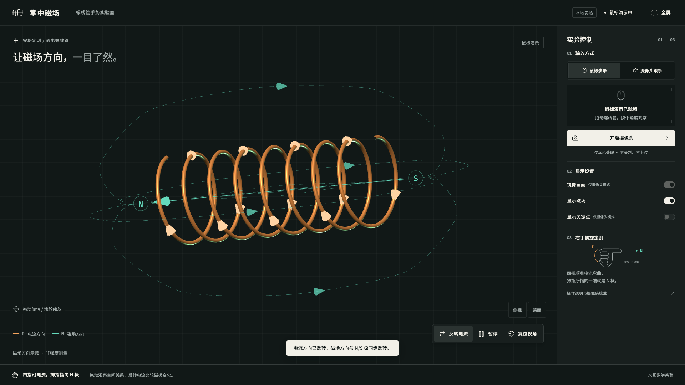
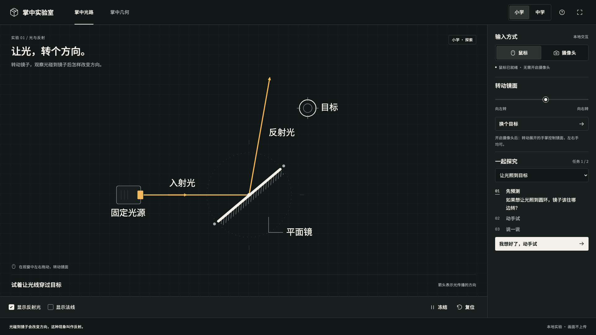
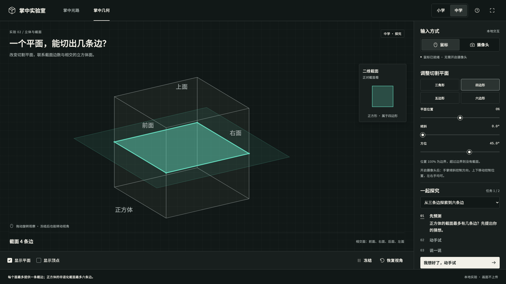
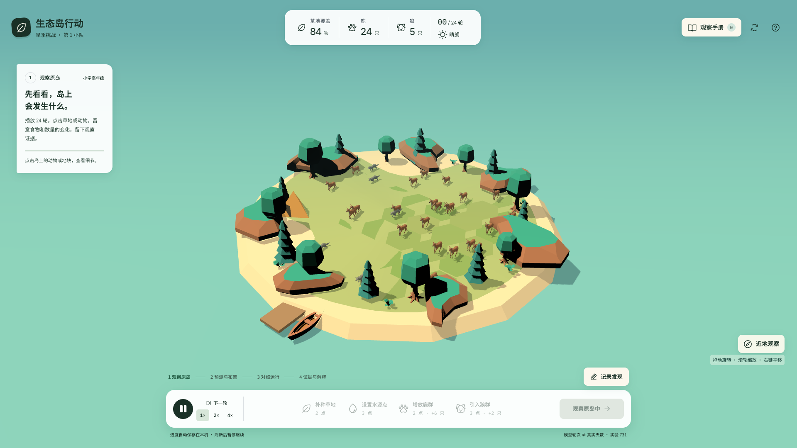
地球3D探究四季、掌中磁场、掌中光路、掌中几何、生态岛。
磁场方向、光路、截面、地轴倾角，抽象到难以落笔成图。
一年的昼长变化、一个生态系统的演变，课堂里等不到。
手势、转动、切一刀，让抽象概念有了身体经验。
怎样把一幅季节示意图变成可以检验想法的任务？
课本上只有一幅四季示意图，学生说不清昼长为什么会随季节变化。
学生能比较同一地点在不同倾角下的全年昼长变化，并说明比较依据。
每个学生都能写出一句话：我改变了什么，观察到了什么，这支持怎样的解释。
提供学段、教学难点、需要控制的变量、视角、设备条件和可用课时。
用一句意图描述，生成可调日期、纬度、倾角的四季3D模型和昼长曲线。
教学观察台把每个人的操作与解释记录下来，供课后回看。
教师现场追问“你改了什么、看到了什么”，也可以让AI扮演追问者。
请先写下预测，再操作模型。
进入教学观察台，选择四季探究。
固定北纬40°，比较原倾角与0°时的全年昼长曲线。
写一句话：我改变了什么，观察到了什么，这支持怎样的解释？
比较条件：北纬40°；同一模型；只改变地轴倾角。
全年昼长曲线随日期变化，夏至与冬至的昼长不同。
在这个理想模型中，全年昼长曲线变为12小时的水平线。
这个对照帮助我们分析地轴倾斜与昼长季节变化的关系。
前置摄像头识别手势，反转电流，看端面方向。
右手螺旋定则讲了很多遍，学生还是把手的握向和电流方向对应不起来。
学生能把右手的握向与螺线管的电流方向、端面极性对应起来。
反转电流前学生先说出预测；反转后能指出预测对错，并用右手法则说明。
学段、已学的电流与磁场概念、有前置摄像头的设备数量、教室光线条件。
内容生成：生成带手势识别的磁场页面；角色扮演：反转电流前追问预测。
入射光、法线、反射光，随手势实时变化。
平面镜反射的作图学生会背，但改一下镜面角度，就说不出反射光往哪边转。
学生能以法线为参照，说明入射角与反射角的关系。
改变镜面角度前学生能预测反射光的转向；操作后能用法线解释预测的对错。
学段、已学的光的直线传播、投屏与设备条件、真实光学实验的安排。
内容生成：生成镜面角度可调的反射模拟；角色扮演：追问入射角与反射角的关系。
正方体截面与二维正视图同步显示。
正方体的截面靠想象，学生常把转动视角带来的外观变化当成截面本身的变化。
学生能预测沿不同方向切正方体得到的截面，并区分视角变化与截面变化。
每个学生写下三种切法的预测；操作后至少改对一处，并说出依据。
年级、已学的立体图形与视图、每组的设备、鼠标或手势的输入方式。
内容生成：生成可旋转、可切割的正方体模型；角色扮演：追问哪些预测成立、依据是哪一步操作。
小组共用一台设备布置条件，做一次公平对照。
生态系统的变化以年计，课堂上看不到；学生也很难体会“只改一个条件”的意义。
学生能设计一次只改变一个条件的对照，并用结果解释生态关系。
每组交一份报告，条件、结果、解释三项齐全，而且只改了一个条件。
提供学段、已学的生态概念、小组数与设备数、运行时长和可用课时。
内容生成：生成可布置条件、可复制配置的生态模拟；连通管道：把各组的条件、结果与解释汇到一起对照；角色扮演：追问改了哪个条件、随机因素排除了没有。
把模型中的问题带回持续观察。
快速改变倾角与日期，比较同一地点的画面和昼长曲线。
在校园固定地点记录日影或昼长，保留真实天气与测量误差。
用三问说清：讨论什么、怎样生成、提供什么。
让学生讨论诗句中的景象如何被画面再现，并区分文本依据与生成补充。
AI作为生成与落地的工具，根据分镜意图制作可供讨论的视频。
提供诗句原文、镜头意图、时长、画面风格和必须保留的意象。
观看问题：哪些画面来自诗句，哪些是生成补充？
看画面时标记：哪些意象能在诗句中找到依据，哪些是生成时补出的。
教学任务示例：让学生补充听众真正需要的信息。
学生能说明共读角在哪里、怎样借书，并根据追问补充遗漏的信息。
AI扮演第一次来访的同学，一次追问一个不清楚的地方，把重新组织表达的机会留给学生。
提供共读角位置、借阅规则、交流对象和学生语言水平；只依据这些事实展开交流。
“我们的共读角可以借书。”
“第一次来的人要到哪里登记？”
“请先在班级借阅表上登记，再到书架取书。”
“共读角在教室后排，书架侧面有班级借阅表。第一次借书请先登记姓名和书名，再到书架取书。”
先给出一个需要预测或判断的任务。
学生动手操作、观察或与情境对象交流。
把看到的现象、依据和疑问说出来或写下来。
用证据解释结果，并根据反馈修改原来的想法。
先确定要做什么教学决定，再决定分析什么数据。
考完之后，下一轮到底复习什么？
先确定要做什么教学决定，再决定分析什么数据。
以决定下一轮复习重点为目标。
得到可以支持复习决策的题目分析、候选问题和后续核查清单。
先整合作答、得分与试卷文本，再用程序计算，最后协助形成复习材料。
提供脱敏作答记录、原题、参考答案、字段说明、评分规则，以及复习课时和已知学情。
喀什初三英语：第24题的作答与得分。
第24题得1分的记录有4,099条，占全部记录的24.94%。
为什么B选项比C选项更常被选择？需要回到题目语境和学生的解题理由。
初三英语 · 完形填空 · 词义与语境。
DA24保存作答选项，KGF24保存该题得分。
But the 24 of helping her is more than money. 24. A. price B. time C. joy
这是一道完形填空题。判断学生的困难，需要结合上下文，不能只根据字段名猜测题型。
已有题库 J-K1-01：换一段语境，再观察学生怎样选择。
But the [24] of helping her is more than money.
A. price B. time C. joy
The true of helping is the warm feeling inside.
A. price B. time C. joy
两题的建议答案均为C。请指出语境中支持joy的词句，再解释另外两个选项为什么不合适。
一次改进要走完四个动作
先逐题核对答案、条件与难度，不合适的改掉或者不用。
根据审过的题目安排复习内容和课堂支架，明确这一步补的是哪个知识关系。
用同类题再看一次学生的表现，记录哪些人仍然困难、困难在哪一步。
复测结果成为下一轮的证据，用来判断这次调整是否有效。题库里有题，不等于已经证明能提高成绩。
考试之外，学习过程中的操作也会留下证据。
四季体验做完了，老师想知道每个学生是在检验猜想，还是只是在点按钮。
判断学生是在检验关于地轴的猜想，还是只是在试用控件。
每条轨迹都能配上一句学生自己的预测或解释；配不上的列成追问名单。
说明任务要求、允许的操作范围，以及哪些操作算“有目的的比较”。
连通管道：教学观察台按时间记录每人的操作；内容生成：把全班轨迹汇总成一页；角色扮演：对没有留下解释的学生按设定追问。
同一条轨迹可以有不止一种解释。
操作者把倾角改为0°，随后查看了全年昼长曲线。
他可能在检验关于地轴的猜想，也可能只是在试用控件。
还缺少操作前的预测和操作后的解释。
改变倾角之前，你预测曲线会怎样变化？现在的结果是否支持你的预测？
评价连接设计与实施，也支持教师反思。
把得分、原题、过程记录和学生解释整理成可以对照的证据。
依据核实的问题，制作复习任务、变式题和记录工具。
让AI在适当的任务中追问理由，帮助学生继续表达；教师据此调整教学。
记录堆积不等于问题清楚，教研需要先确定要回答什么。
听课记了很多，为什么教研还是空泛？
记录堆积不等于问题清楚，教研需要先确定要回答什么。
围绕一段实录，形成基于证据的改课建议。
听了一节沉与浮的课，记了满满几页，教研时却说不出下次该改哪一步。
针对一段提问与回应，提出一项能够在下次课堂检验的改课建议。
建议具体到三句话：下次怎样问、学生要做什么、教师观察什么。
提供模拟匿名实录、学习目标和教师的疑问；分析真实课堂时，还应补充相关方案与学生记录。
把40分钟实录、学习目标和教师疑问接在一起，定位到一段提问与回应。
虚拟教研员依据实录提出不同解释，与教师讨论可以改动的位置。
形成一条下次课就能试的追问链与观察要点。
《沉与浮》模拟匿名课堂实录 · 原文节选。
师你们后来把它改成了什么形状，放进水里以后看到了什么？
生11捏成了一只小碗，平平地放到水面上，它就浮住了，跟一片树叶似的。
师好，先记下这个结果。往碗里放一颗玻璃珠试试，放的时候注意观察碗往下沉了多少。
学生已经报告形状与沉浮的变化。怎样继续追问，才能让他说明判断依据？
基于刚才的实录，讨论一个可改动的位置。
学生说橡皮泥捏成小碗后浮了，我想让他解释原因，可以怎样接着问？
可以先问：同一块橡皮泥变形后，轻重有没有改变？你准备用什么证据说明？这样可以检查学生是否把浮起来理解为变轻了。
教师我已有称量环节，还需要补什么？
教研员让学生把称量结果、形状变化和水中的表现连起来说明，并区分观察事实与自己的解释。
三类内容分开存，以后才找得到、用得上。
课堂实录、学生作品、观测记录等原始材料按课例归档，保留来源和时间。
写下当时的判断和理由，例如“这次追问给早了，学生还没预测”。判断要能对应到具体材料。
把反复要用的步骤固化成模板，例如提问链模板、课例分析模板；使用时仍需按课调整。
学生问“白天为什么也看得到月亮”，这类临时需要的知识补给，同样可以用三问委托AI准备。
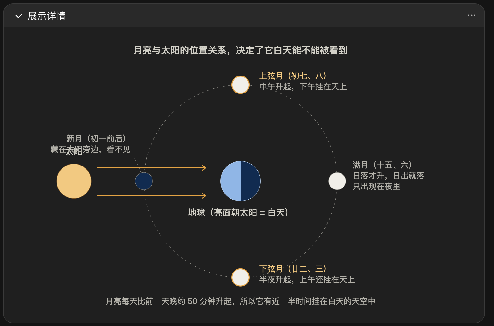
生成示意图发展环节的产出，要回到下一轮设计。
教学设计
课堂实施
教学评价
教师专业发展
把实录、作品、记录整理成可用依据，让下一轮讨论从具体材料开始。
把一次任务里的步骤和格式留下来，下次只需替换内容，减少重复交代。
让AI在追问和协商中参与教研；采信什么、改动什么，仍然由教师决定。
每次使用前先问：要解决什么问题，最终成功标准是什么，如何让AI理解以上两点。
以科学护眼项目为例：四个环节，四件材料。
教学设计
课堂实施
教学评价
教师专业发展
把学生的判断、动手和合作留在学习里。
AI做得越多，我们越需要决定保留什么
把学生的判断、动手和合作留在学习里。
先看材料、操作与真实变化。
哪些学习，必须由学生亲自经历？
先看材料、操作与真实变化。
材料的质感、操作的阻力和真实变化，都是学习的一部分。
感受材料 触摸纸张和木块，比较厚度与摩擦，体验装配时的松紧与间隙。
经历变化 在规范、安全的实验中，观察真实反应的颜色或气泡，感受现象发生的过程。
面对不确定 装置可能漏水，测量可能波动；学生需要重复、调整并如实记录。
两边互相支持，不是互相替代
可以反复改变日期、纬度、倾角，观察理想模型里的光路与季节变化。
材料有差异，测量有波动，装置要调试，结果需要重复确认。
都围绕同一问题，都要求学生说明依据。
模拟帮助比较，实做提供真实经验，两者在课堂里交替使用。
设备按任务选，不要求全部购置
学生操作、观察并留下纸质记录，形成可讨论的原始材料。
把需要整理的记录数字化，保留原图与采集条件。
核对、汇总数字材料，让全班能够共同读取和讨论。
依据讨论结果修改装置、补充观察或完成下一次任务。
保留原图，再核对小数点、单位和空白格。
第1次：12.8秒；第2次：空白。旁注：计时按晚了。
第1次：128；第2次：空白。旁注未被识别。
第1次：12.8秒；第2次：保留空白。补回旁注，并链接原图。
怎样把一张写满数据的纸质实验记录，变成可核对、可反馈的数字记录？
发现记录中的缺项、单位和可疑数据，不直接诊断错因。
每条疑点都能回到原图位置；学生能对照原图确认或更正自己的记录。
纸表原图、题目要求、实验条件、单位和已核对范围。
连通管道：先做文字提取和整理，再按教师要求提示需要核对的位置。
回到三问做取舍。
让学生用自己的操作与记录说明判断，而不只是获得一份整齐的答案。
数字化后的记录仍然能回到原图；学生说明判断时，引用的是自己的记录。
提供必要的原图、任务要求、测量条件和核对范围。
连通管道：整理证据；内容生成：形成初稿；角色扮演：追问理由。
由教师根据学习目标选择采集范围，学生参与确认自己的记录。
用观察台的一次选择作小例
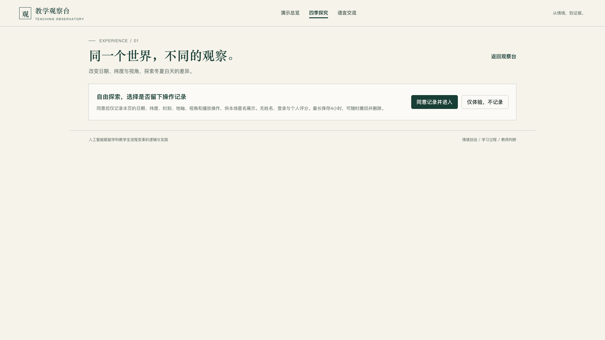
只处理本次任务确实需要的材料，去除无关的姓名、面部和联系方式。
了解材料会发送到哪里、谁能访问、保存多久，以及怎样删除。
按学校要求安排知情说明、权限与必要授权，再选择合适的工具。
教学观察台允许只体验、不记录，也可以停止并删除自己的记录。
给纸笔、投屏和澄清留出路径
字迹、口音、设备和环境都可能让识别结果不完整。
学生可以重新写清或口头说明，不因为一次识别失败被判定不会。
不要求人人有设备，小组共用和纸笔记录仍然有效。
请学生核对识别结果；更正识别文本或补充说明，同时保留原记录。
来源性质与使用权限，需要分别核对。
学生亲自思考、交流、操作和创作，并说明自己怎样使用了AI。
教师审核资源和评价，结合证据决定是否采信AI的建议。
区分真实记录、模拟材料与生成内容；角色模拟不等于历史人物真实发言。
再核对来源、引用方式和使用许可；可访问的资源不等于可以任意发布。
真实行动 → 必要采集 → AI辅助 → 师生判断 → 再实践
学生先做实验、观察、纸笔记录，产生原始材料。
只把需要核对或汇总的证据拍照、录入，保留原图。
整理、比较、提示疑点，不替学生下结论。
教师和学生依据原图与任务要求作决定，修改方案后进入下一次实验。
每次使用前，用三问把四个环节中的任务说清楚。
内容生成
连通管道
角色扮演
要解决什么问题
最终成功标准是什么
如何让AI理解以上两点
一次教学留下的材料与判断，进入下一轮的设计与实施。
从现实课堂里感知问题、发现问题，AI做不到。
它看不见哪个孩子皱了眉，哪一步卡住了。
多米诺骨牌的第一张，永远是一个从现实里来的问题。
三问、三类能力、四个环节，都从这一推开始。
没关系。这正是AI的意义：AI会告诉你怎么用AI。
我是（年级）（学科）老师。我想解决的问题是：______。做到______才算成功。我的情况是：______。请告诉我，可以怎样用AI。
把你今天最好奇的那个问题，发给任何一个AI。
条件变化示例：植物观察课的课堂交流时间缩短。
学生仍需依据连续记录描述植物变化；不把植物的真实生长过程压缩成演示结果。
集中讨论一组有代表性的连续记录，其他记录保留在小组交流中。
教师流程、学生任务单与评价要求都改为：每组用两条以上记录说明一个变化。
教师备课与学生探究需要不同的信息。
写清实验目的、控制变量、组织方式与核对要点。
留下变量、测量次数、数据与解释位置，支持学生自己记录和判断。
分析可能的错误及其依据，帮助教师追问，不预先替学生填写结果。
任务决定材料，量规决定作品要求
提出用眼问题、设计记录方式、完成护眼方案作品、展示并互评，四步依次进行。
清单写清每组要用到的记录纸、测量工具和展示材料，缺什么当场补。
作品量规看方案是否说得清依据，过程量规看记录是否按时完成、分工是否落实。
告知书让家长知道孩子要做什么、需要配合什么；前后测只记录方案中约定的观察项。
政策资料整理示例：保留出处，区分引文与概括。
“将人工智能技术融入教育教学全要素全过程”
《关于加快推进教育数字化的意见》提出，应推动人工智能在教育教学各环节中的应用。
教师可以从备课、课堂活动和评价中的具体需求出发，选择适当的AI辅助方式，并核查输出。
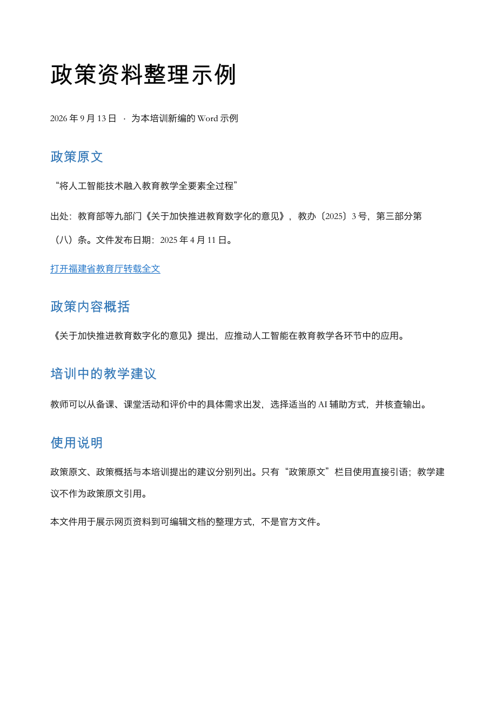
联动视图与配重注水
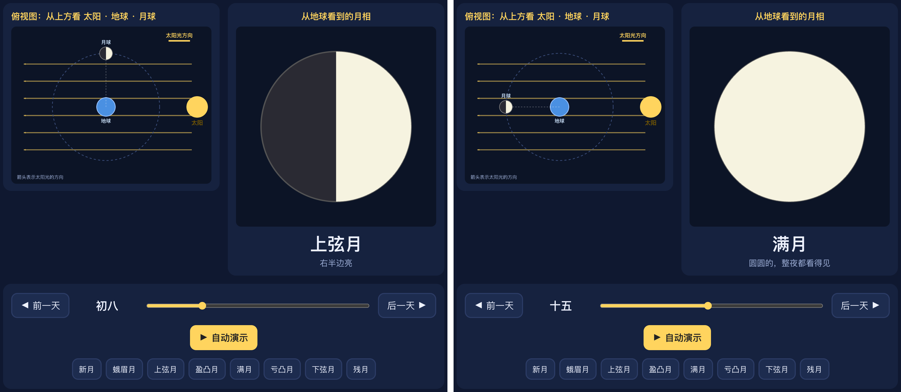
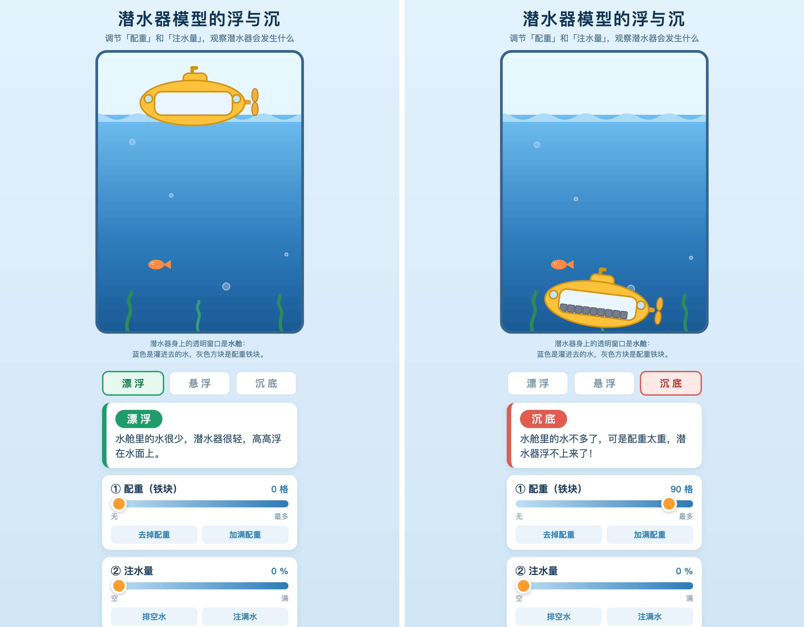
调整农历日期，俯视图与地面看到的月相同时变化，两边一起看。
改变配重和注水量，对照漂浮、悬浮、沉底三种状态。
两个例子都先预测再操作，区别在于一个看日期与位置的联动，一个看条件与状态的对应。
先说来访者能听懂的介绍，再回应追问。
学生能用英语介绍端午的一项习俗，并回应来访者的一到两个追问。
学生对至少一个追问作出自己的补充，而不是照读介绍。
提供端午习俗清单、学生已学过的英文句子，以及听众是外校同学这一信息。
AI扮演来访的外校同学，提出具体问题，不替学生写出整段介绍。
来访者问：What do people eat on this festival? 学生答：We eat zongzi. It is rice wrapped in leaves. 来访者追问：Why do you wrap it in leaves? 这时学生需要补充自己的说法，而不是照读介绍。
身份、知识范围与代写边界
对话对象是依据材料设定的达尔文角色，不是历史人物的真实发言。
角色只依据本次提供的材料回答，材料之外的问题可以说不知道。
学生问：我能不能直接把你的回答抄进作业？角色答：我可以帮你把思路说清楚，整段照抄会让老师看不出你自己的判断。学生接着问：那你先问我一个问题。角色问：你观察到的证据是什么？
角色可以追问、可以举例，但不替学生完成作业，也不编造历史细节。
生成画面、联网天气与本地实测
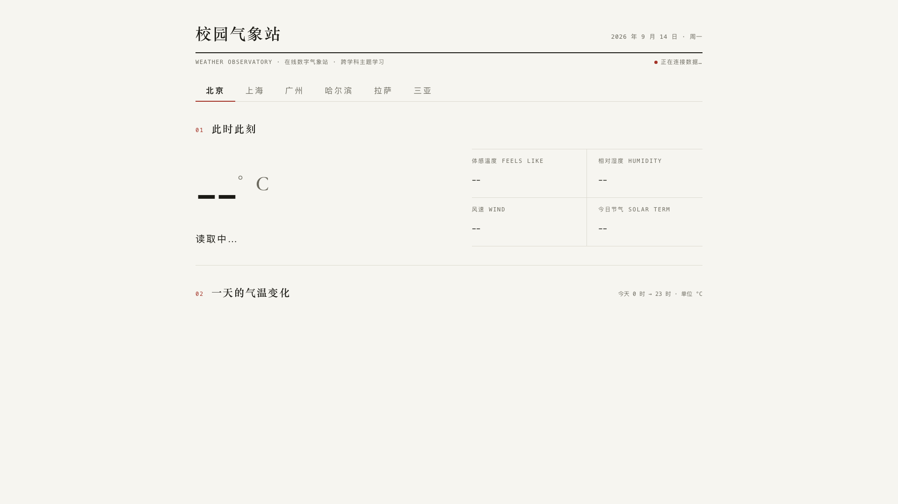
短片用情境画面引出校园观测项目，其中仪器和线缆经过生成补绘，不用来讲设备结构。
看板取网络天气，取不到时使用示例数据，并标明数据来源。
学生自己记录的温度、天气现象和观测时间，才是这个项目的实测部分。
把三类信息放在一起，学生要判断哪一条能回答自己的问题，哪一条只是背景。
先在外部平台训练模型，再在网页里加载并观察分类
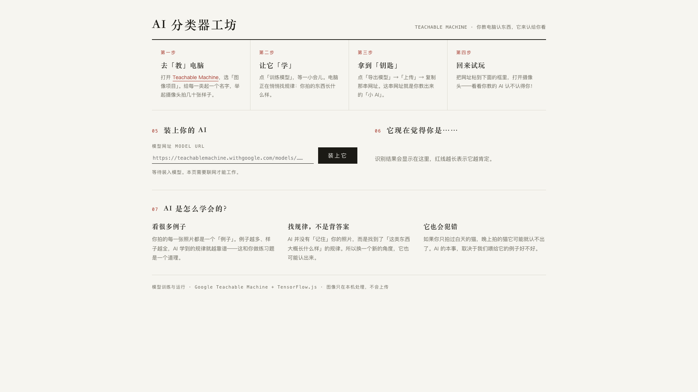
在外部平台训练分类模型，再把模型地址加载到网页中进行识别。
用没有用于训练的图片检查结果，改变背景、光线或角度，记录哪些情形容易分错。
输出的类别分数不等于事实正确率。需要检查训练样本是否覆盖任务条件。
生成模型与程序动画可以承担不同任务。
先写清学习问题、关键画面、时长和不能误画的内容。
需要连续场景时，可以使用视频生成模型；需要精确文字、图形与时序时，可以用程序制作动画。
形成首图与分镜，生成或编排镜头，再处理拼接、字幕和声音。
逐段核查概念、动作、字幕与来源，并明确哪些画面是生成的。
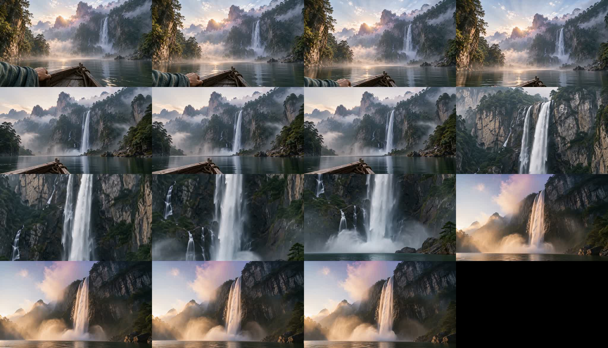
高三英语写作包含不同的任务要求。
邀请英国好友Peter组队参加跨文化数字故事创作大赛，需要交代邀请目的与合作安排。
围绕养老院钢琴演出的情境续写，需要衔接人物、事件与前文线索。
把对应得分与作文文本、评分标准放在一起，区分内容遗漏、衔接困难和语言表达问题。
依据核实的问题安排短练习，保留修改前后的文本，观察学生是否能作出有理由的修订。
天气观测示例：没有记录，不等于没有能力。
示例材料标出S17没有观测记录，需要进一步确认。
只能说明当前材料未找到相关记录，不能据此判断参与态度或观察能力。
我在现有记录中还没有找到你的观测结果。请和我一起确认：是否轮到你记录，是否记在其他表中，或是否需要补做一次观察？
先看学习目标，再决定采用哪种材料。
通过具体问题观察学生是否理解概念、会解释现象。
保存题号、得分与必要备注，支持比较前后表现。
依据作品与过程判断学生是否说明证据、改进方案并完成合作任务。
把一次教学中的疑问缩小到可研究的范围
课堂上这个没弄明白的困惑，能不能变成一个小课题，用两三周的时间做一次实证？
我想弄清：学生在改变一个条件后，是否能用证据说明变化。研究范围限定在一个班、两到三周，先看一个可观察的行为。
AI负责把困惑整理成可检验的问题，并列出需要补充的材料。研究结论由我判断，不把它的建议当作研究结果。
提供课标要求、班级已有基础和可用的器材与课时，让整理出来的问题不脱离实际教学条件。
以周记录核对为例，设计一份方法模板。
提供应交名单、当周记录、字段说明和上次记录；用编号代替身份信息。
先查重复与缺项，再按同一口径汇总；样本变化时单列说明，不补造记录。
交付汇总表、缺漏清单和需要教师确认的问题，每个结论可以回到来源。
用另一周记录重复执行，并人工抽核。一次结果正确，还不能证明方法稳定。
把教学中的方法迁移到教师日常办公。
例如，一份可编辑的活动安排和一份配套记录表，或一份可以核查的周报。
文件打开就能用：安排能排进课表，记录表能直接打印，周报里的每个数字都能回到来源。
提供已有材料、读者、格式、期限、学校要求和应保留的来源。
连通管道：先整合资料与记录；内容生成：再生成文件；角色扮演：需要讨论取舍时参与协商。
同一张纸表，可以直接读图，也可以先识别成文字。
拍照或扫描，保留题目、单位、表格结构和旁注。
可以由多模态模型直接读取，也可以先用OCR提取文字；两条路径都需要核对。
HTML错题扫描仪（需联网）原记录为12.8秒，识别文本为128；核对时恢复小数点和单位，并保留原图。
先更正识别误差，再分析记录；缺测和旁注不能被自动补造或删除。
先看依据，再落到校内的具体规则
UNESCO 2023年生成式AI教育指南强调人本、隐私保护、适龄和公平使用。这是国际指南的概括，不是本地法律。
处理学生材料前，先确认学校关于数据、账号和发布的规定；谁批准采集、谁负责保存，都要写清楚。
如果要把课堂数据用于教研，先定采集范围和保存期限，再决定哪些环节可以用AI，哪些环节必须人工完成。
系统、文档、视频和提示词都可以从具体需求出发选择。
查看四季循环、月相、潜水器与掌中实验室。
查看单元全案、实验记录表、项目方案包和评价材料。
查看《望庐山瀑布》视频、共读角交流与达尔文角色卡。
查看提示词库，并补充本班目标、角色要求和背景。
讨论时先说明任务，再一起判断AI怎样参与。
说明一个具体的学习表现、教学决定或工作产出。
判断需要整合材料、生成制品，还是参与持续的交流与追问。
补充学段、已有材料、任务条件与判断标准，再决定下一步。
点击条目跳转；按 T 或 Esc 关闭。页面 ID 为逐页内容脚本 v0.2 的原 ID；备选片段列在主线之后。
| → 空格 PageDown Enter | 下一步 / 下一页（翻页器的“下一页”键同样有效） |
| ← PageUp Backspace | 上一步 / 上一页 |
| A | 本页分步一次全部显示；地址栏加 ?all 则全场不分步 |
| Home / End | 第一页 / 最后一页 |
| 数字 + Enter | 跳到第 N 页（课件页码，见目录左侧顺序） |
| T | 目录 |
| N | 打开讲者视图（独立窗口：备注、当前页与下一页、计时）。把它拖到笔记本屏幕，课件窗口放到投影并按 F 全屏。 |
| F | 全屏 / 退出全屏 |
| V | 播放 / 暂停本页视频；翻页时视频自动暂停 |
| I · L · K | 显示/隐藏 页面ID · 定位行 · 关键帧 |
| H 或 ? | 本帮助；Esc 关闭 |
当鼠标点进视频、输入框或链接时，快捷键交给该元素处理，不会翻页。资源链接在新标签页打开，讲完切回本窗口即可。